Theory
This example considers the solution of the PVD equations introduced in a previous tutorial, but in cylindrical coordinates and under the assumption of axisymmetry. In this case, the undeformed and deformed position vectors, denoted by
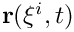
and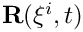
respectively, may be written as:
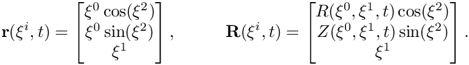
The undeformed and deformed covariant metric tensors,
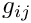
and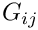
respectively, are therefore:
![\[
g_{ij} = \begin{bmatrix}
1 & 0 & 0 \\
0 & 1 & 0 \\
0 & 0 & {\xi^0}^2
\end{bmatrix}, \hspace{1cm}
G_{ij} = \begin{bmatrix}
(\frac{\partial R}{\partial \xi^0})^2 + (\frac{\partial Z}{\partial \xi^0})^2 &
\frac{\partial R}{\partial \xi^0}\frac{\partial R}{\partial \xi^1} + \frac{\partial Z}{\partial \xi^0}\frac{\partial Z}{\partial \xi^1} & 0 \\
\frac{\partial R}{\partial \xi^0}\frac{\partial R}{\partial \xi^1} + \frac{\partial Z}{\partial \xi^0}\frac{\partial Z}{\partial \xi^1} &
(\frac{\partial R}{\partial \xi^1})^2 + (\frac{\partial Z}{\partial \xi^1})^2 & 0 \\
0 & 0 & R^2
\end{bmatrix}
\]](form_5.png)
Recall the non-dimensional PVD equation, presented here with an additional mass damping term,
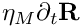
:
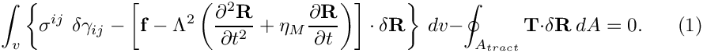
Note that in the implementation of these equations
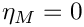
by default. The following property holds due to the definition of the Green-Lagrange strain tensor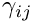
and the symmetry of the second Piola stress tensor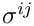
:
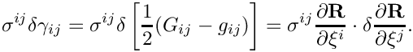
Hence, the PVD equation becomes:
![\[
\begin{aligned}
\int_{v} \left\{ \sum_{i,j=1}^2 \sigma^{ij}\left[\frac{\partial R}{\partial \xi^i}\frac{\partial(\delta R)}{\partial \xi^j}
+ \frac{\partial Z}{\partial \xi^i}\frac{\partial(\delta Z)}{\partial \xi^j}\right] + \sigma^{33}R\delta R
- \left[ {\bf f} -
\Lambda^2 \left(\frac{\partial^2 {\bf R}}{\partial t^{2}} + \eta_M\frac{\partial {\bf R}}{\partial t}\right) \right] \cdot
\delta {\bf R} \right\} dv \\
-\oint_{A_{tract}} {\bf T} \cdot \delta {\bf R} \ dA =0.
\ \ \ \ \ \ \ \ (2)
\end{aligned}
\]](form_12.png)
The following example considers a steady state solution (
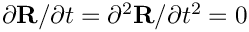
) to these equations, though the solution to a time-dependent problem using the same underlying elements is discussed here.Demo problem: Compression of a hyperelastic spherical shell
As a demonstration, we consider the compression of hyperelastic spherical shell which has an inner radius  and thickness
and thickness
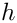
when stress-free, under an external pressure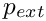
. The shell is assumed to obey the Neo-Hookean consitutive law. For an incompressible material, the strain energy density (non-dimensionalised by the elastic modulus) is given by:
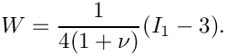
A generalization to the above, proposed by Attard ("Finite strain--isotropic hyperelasticity", International Journal of Solids and Structures 2003), for compressible materials is:
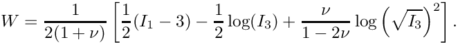
In the above,  is the Poisson ratio and
is the Poisson ratio and
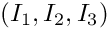
are the strain invariants introduced previously. The incompressible and compressible cases shall now be considered seperately.Incompressible case
When the material is incompressible, some analytical progress can be made by imposing spherical symmetry. Denoting
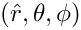
and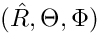
as the spherical coordinates in the undeformed and deformed configurations, respectively, the Cauchy principal stresses, denoted here as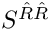
, and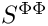
are given by:
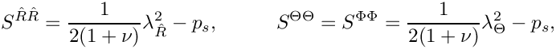
where
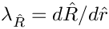
and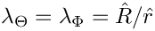
are the principal stretches and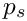
is the solid pressure, the Lagrange multiplier term introduced in the solid theory tutorial to enforce incompressibility. The incompressibility condition is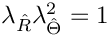
, from which the the dependence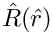
can be derived as:
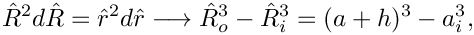
where
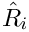
and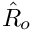
denote the outer and inner radii of the shell, respectively, when under compression. A second equation for the two unknowns , can be derived by first obtaining an expression for the solid pressure from the equilibrium equation:
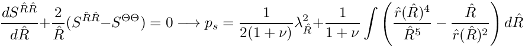
The integral can be evaluated by changing the integration variable to
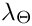
and using the incompressibility condition as follows:
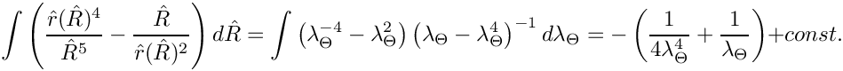
The radial principal Cauchy stress is therefore:
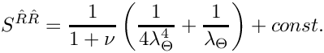
After applying the boundary conditions,
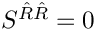
on the inside face and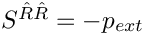
on the outside face, the second equation connecting and is found to be:
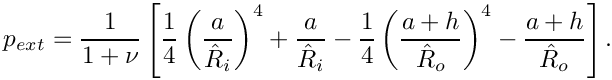
In the driver code discussed below, and are found via Newton iteration.
Compressible case
Although less analytical progress is possible in the compressible case, the problem can still be simplified down to a single ODE for using spherical symmetry. If the material obeys the compressible Neo-Hookean constitutive law, then the Cauchy principal stresses are:
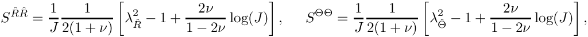
where
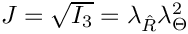
. Substituting these expressions into the equilibrium equation gives:
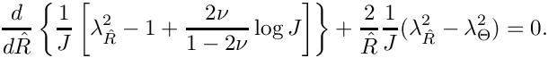
In the undeformed frame, this equation reads:
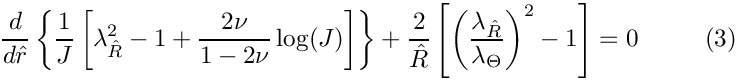
In this tutorial, a benchmark test is performed by solving equation (3) is solved seperately using 1D finite elements.
Results
The figure below shows plots of the deformed position against the undeformed position
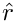
for a range of Poisson ratio and external pressure values. The solid blue lines were obtained using the 2D axisymmetric elements, while the dashed blue lines were obtained under the assumption of spherical symmetry, following the approach outlined in sections Incompressible case (for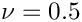
) and Compressible case (for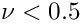
). Excellent agreement between the two approaches is found across all parameter sets considered.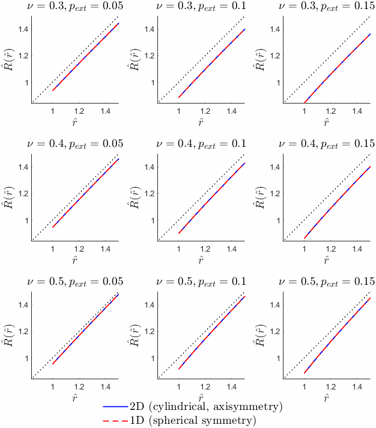
Global parameters and functions
As is standard, the namespaces GlobalPhysicalVariables and GlobalSimSettings are used to define the physical parameters and simulation parameters, respectively, for the problem.
The mesh
The mesh for this problem can be constructed simply by upgrading the existing TwoDAnnularMesh to a solid mesh.
The problem class
The driver contains two problem classes. The first is the main problem using the 2D axisymmetric elements, while the second is an auxiliary problem to solve equation (3) in the compressible case or find the unknowns and in the incompressible case. Since the latter of these is relatively standard, only the former is documented here. The problem class declaration is shown below.
The problem constructor
The constructor begins with assigning the output directory and creating the bulk and surface meshes. The function create_boundary_elements() is then called to create traction elements on the outer boundary of the shell.
Following this, a constitutive law is selected. Depending on the flag GlobalSimSettings::is_incompressible, this will either be the incompressible or compressible version of the NeoHookean constiutive law. The function complete_problem_setup() (discussed below) is then called and equation numbers are assigned.
Completing the problem setup
To complete the problem setup, the pointer to the constitutive law is passed to each of the bulk elements. An attempt is made to cast to the version of the bulk element that contains pressure degrees of freedom, the QAxisymmetricCylindricalPVDWithPressureElement. If this cast is successful, then the run is using the solid pressure formulation and, depending on the value of GlobalSimSettings::is_incompressible, incompressibility may be enforced using the element's member function set_incompressible(). The pointer to the external pressure function is then passed to each of the interface elements for application of the traction boundary condition on the outer surface. Finally, The Dirichlet boundary conditions for this problem are set: pinned radial position at
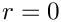
and pinned axial position at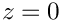
.The driver code
The driver code begins by specifying command line arguments for whether the solid pressure formulation is to be used, whether incompressibility should be enforced, the value of the material's Poisson ratio and the external pressure applied on the outer face of the shell.
Following this, a number of consistency checks are made. For example, if incompressibility has been specified then a check is made that the solid pressure formulation has also been selected. If this is not the case, a warning is issued and the flag GlobalSimSettings::use_pressure_formulation is set to true.
Finally, both the main and auxiliary problems are created and the Newton solve followed by output is done in each case.
Source files for this tutorial
- The source files for this tutorial are located in the directory:
demo_drivers/axisym_solid/shell/ - The driver code is:
demo_drivers/axisym_solid/shell/shell.cc - A refineable version of the driver code can be found at:
demo_drivers/axisym_solid/shell/shell_adaptive.cc
PDF file
A pdf version of this document is available. \